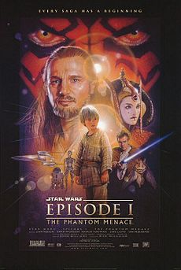
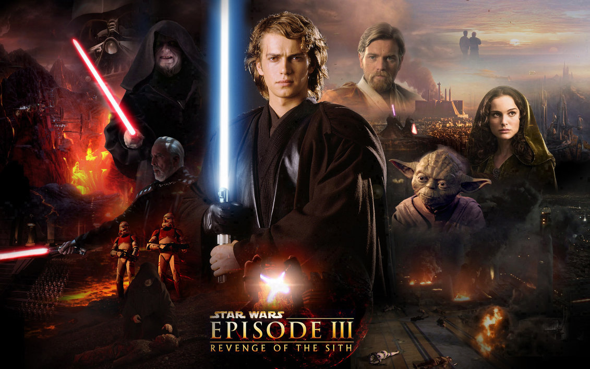

Star Wars
A long time ago in a galaxy far, far away....
Episode I - The Phantom Menace
The Trade Federation upsets order in the Galactic Republic by blockading the planet Naboo in preparation for a full-scale invasion. The Republic's leader, Supreme Chancellor Valorum, dispatches Jedi Master Qui-Gon Jinn, and his apprentice, Obi-Wan Kenobi, to negotiate with the Trade Federation Viceroy, Nute Gunray. Darth Sidious, a Sith Lord and the Trade Federation's secret benefactor, orders the Viceroy to kill the Jedi and begin their invasion with an army of battle droids. The Jedi escape and flee to Naboo. During the invasion, Qui-Gon saves the life of a clumsy Gungan outcast, Jar Jar Binks, from being run over and killed by a droid transport. Indebted to Qui-Gon, Jar Jar leads the Jedi to Otoh Gunga; an underwater Gungan city. The Jedi unsuccessfully try to persuade the Gungan leader, Boss Nass, into helping the people of Naboo; but he is not interested due to disliking the humans on the surface. However, the Jedi do manage to obtain underwater transport to Theed, the capital city on the surface, narrowly avoiding getting eaten by sea monsters on the way. They rescue Queen Padmé Amidala, the ruler of the Naboo people, and escape from the blockaded planet on her Royal Starship en route to the Republic capital planet of Coruscant.
Episode II - Attack of the Clones
Ten years after the Trade Federation's invasion of Naboo, the Galactic Republic is threatened by the Separatist movement organized by former Jedi Master Count Dooku. Senator Padmé Amidala comes to Coruscant to vote on a motion to create an army to assist the Jedi against this threat. Narrowly avoiding an assassination attempt upon arrival, she is placed under the protection of Jedi Master Obi-Wan Kenobi and his apprentice, Anakin Skywalker. The two Jedi thwart a second attempt on her life and subdue the assassin, Zam Wesell, a shape-shifter who is soon killed by her bounty hunter client before she can reveal his identity. The Jedi Council assigns Obi-Wan to identify and capture the bounty hunter, while Anakin is assigned to escort Padmé back to Naboo, where the pair soon fall in love and begin a relationship.

Episode III - Revenge of the Sith
Three years after the Battle of Geonosis, the galaxy is in a state of civil war. During a space battle over Coruscant, Jedi master Obi-Wan Kenobi and Jedi Knight Anakin Skywalker lead a mission to rescue the kidnapped Supreme Chancellor Palpatine from the cyborg Separatist commander, General Grievous. After infiltrating Grievous's flagship, the Invisible Hand, the Jedi battle Count Dooku, whom Anakin eventually executes at Palpatine's urging. Grievous escapes the battle-torn cruiser in the last remaining escape pod, in which the Jedi are forced to crashland the Invisible Hand on Coruscant. There, Anakin reunites with his wife, Padmé Amidala, who reveals that she is pregnant. While initially excited, Anakin begins to have prophetic visions of Padmé dying in childbirth, and his worry steadily grows.
